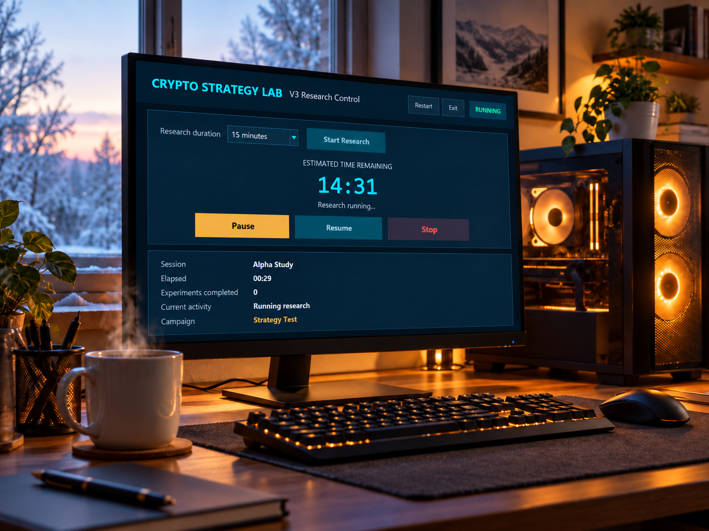

I Set Out to Build a Crypto Researcher and Ended Up With an Overengineered Space Heater
I built Crypto Strategy Lab to run bounded autonomous research sessions. Then I discovered one-hour GPU research runs also make a surprisingly effective office heater.